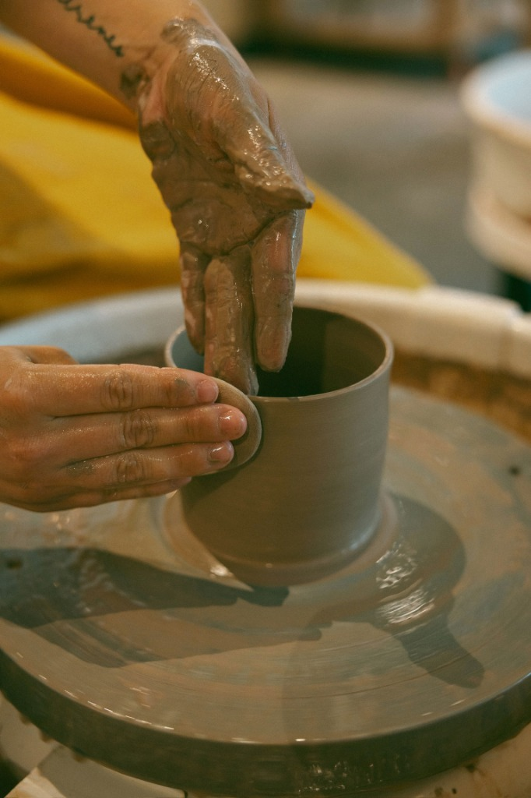
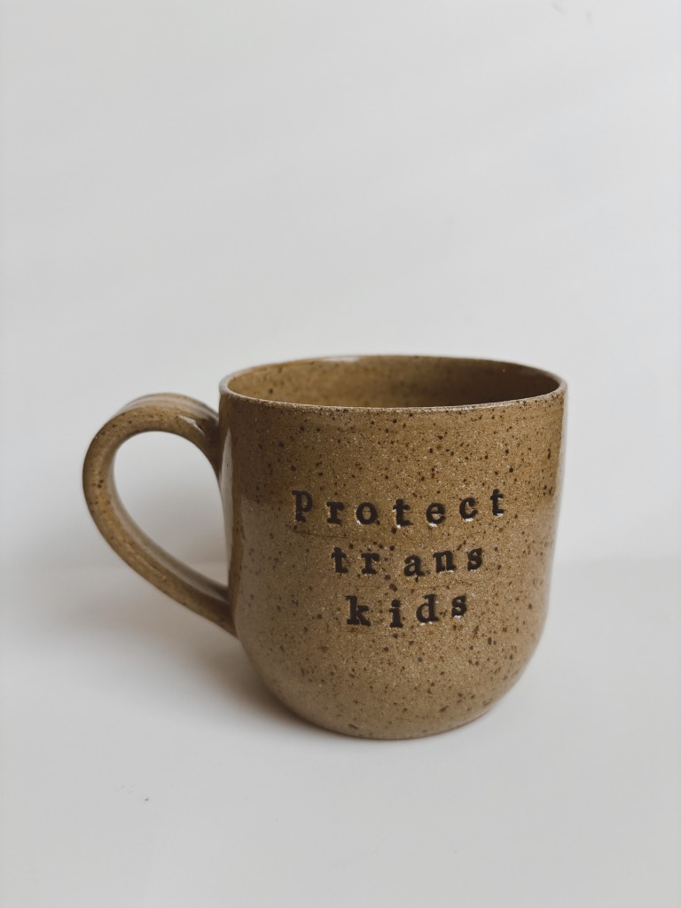
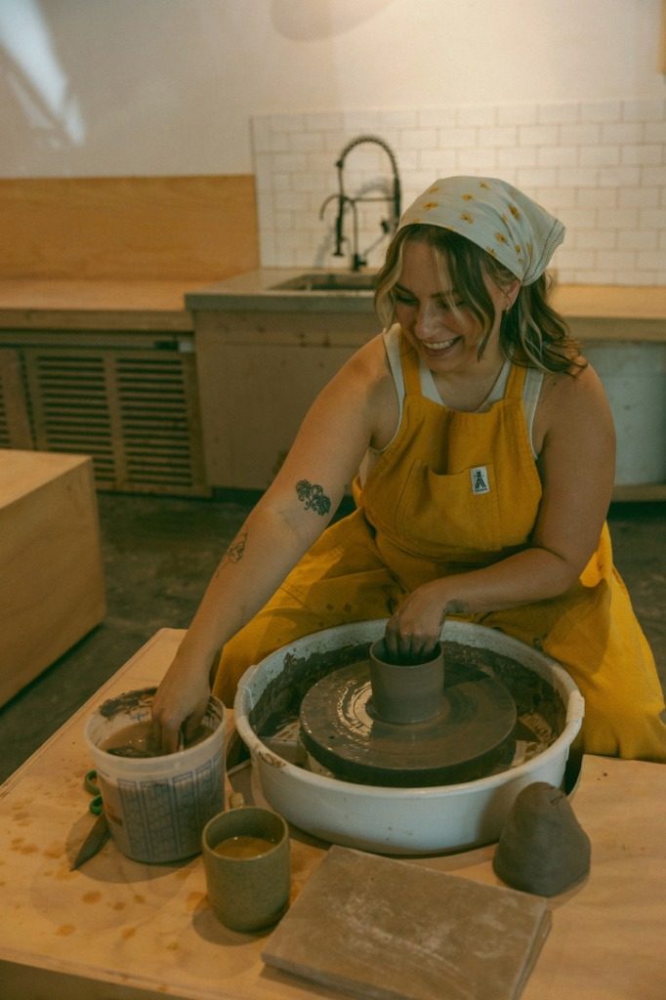
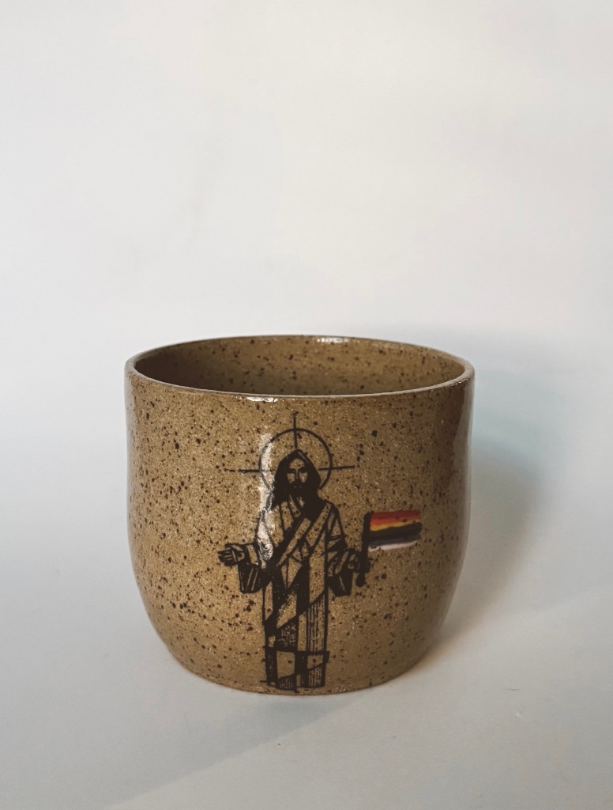
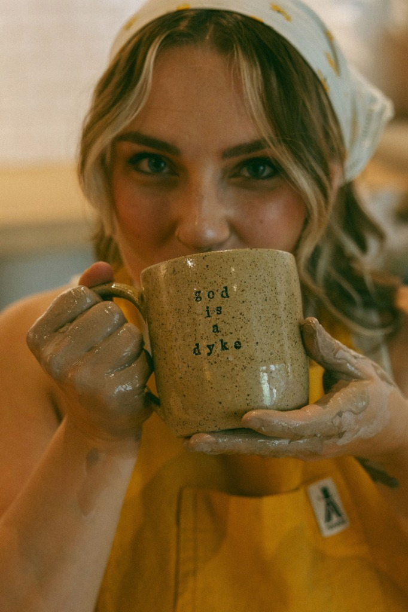
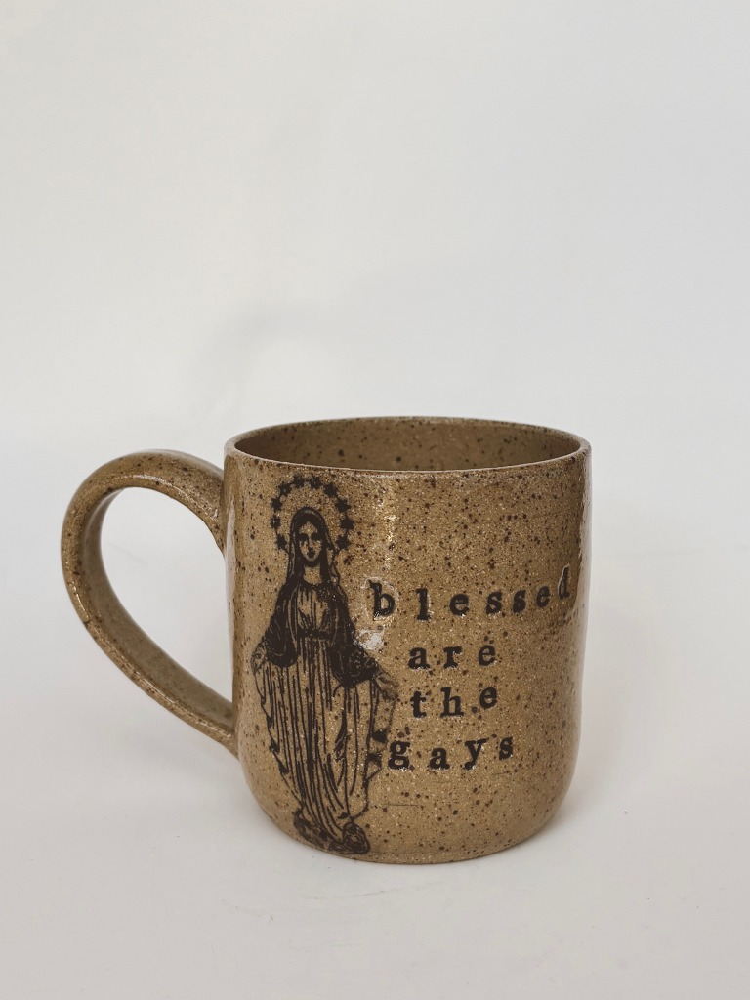

queerly beloved pottery
handmade pottery by an ex-catholic dyke, raising funds for Queer and trans youth of faith






what i do:
i make small-batch, handmade pottery that centers queerness while juxtaposing it with images and phrases from religious traditions. each piece is thrown, stamped and glazed by hand, created to integrate into the lives of queer and trans folks as a quiet act of protest and healing.
why i do it:
my work is a protest. full stop. the studio is where i fight back. i make pieces people can live with as both resistance and care, and am thrilled to donate everything i can to organizations serving and protecting LGBTQIA2S+ youth of faith